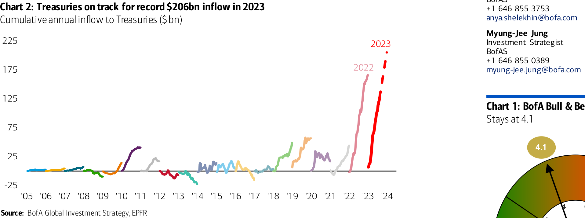
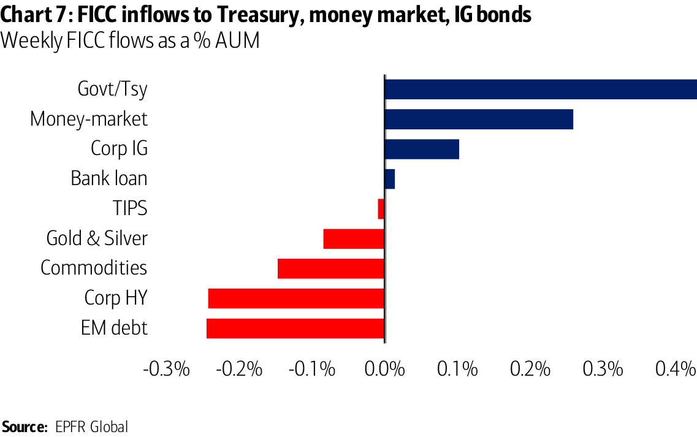

The Flow Show
Record Treasury inflow yet Yields don’t fall
Scores on the Doors : crypto 54.4%, stocks 15.0%, HY bonds 6.6%, oil 5.2%, gold 4.9%, IG bonds 4.0%, commodities 3.8%, cash 2.8%, govt bonds 0.0%, US dollar -1.0% YTD.
Tale of the Tape : 3% CPI, UST annualizing record >$206bn inflows (Chart 2), China deflation yet 10-year yield >4%...debt, fiscal, labor, geopolitics … cost of capital ain ’ t falling without hard recession, and stocks suddenly stuck.
Weekly Flows : $20.5bn to cash, $6.9bn to bonds, $1.5bn to stocks, $0.7bn from gold.
Flows to Know :
•
Cash: strong inflows … $145bn QTD, faster inflows than in Q2 (Chart 3);
•
Treasuries: strong inflows … $127bn YTD (annualizing record $206bn);
•
Credit: largest outflow from HY bonds in 12 weeks ($1.2bn);
•
EM: biggest debt outflow in 6 weeks ($1.2bn – Chart 4), largest equity inflow since Apr ’ 23 ($6.0bn – Chart 5);
•
Healthcare: largest inflow since Apr ’ 23 ($1.4bn – Chart 6).
BofA Private Clients : $3.2tn AUM … 60.6% stocks, 21.2% bonds, 11.6% cash; private clients buying T-bills at fastest clip in 3 months, private clients buying Japan, IG, low-vol ETFs, selling growth, bank loan, financials, tech ETFs.
BofA Bull & Bear Indicator : remains at 4.1; hedge fund positioning most bullish since Dec'22, long-only funds still bearish.
Trading ideas and investment strategies discussed herein may give rise to significant risk and are not suitable for all investors. Investors should have experience in relevant markets and the financial resources to absorb any losses arising from applying these ideas or strategies. >> Employed by a non-US affiliate of BofAS and is not registered/qualified as a research analyst under the FINRA rules. Refer to "Other Important Disclosures" for information on certain BofA Securities entities that take responsibility for the information herein in particular jurisdictions.
Investment Strategy Global
The indicator identified above as the BofA Bull & Bear Indicator is intended to be an indicative metric only and may not be used for reference purposes or as a measure of performance for any financial instrument or contract, or otherwise relied upon by third parties for any other purpose, without the prior written consent of BofA Global Research. This indicator was not created to act as a benchmark.
Chart 2: Treasuries on track for record $206bn inflow in 2023 Cumulative annual inflow to Treasuries ($ bn)
Chart 1: BofA Bull & Bear Indicator
====================================================================================================
The Flow Show | 10 August 2023
Chart 3: Strong QTD pace of inflows to money market funds Cumulative quarterly inflows to money market funds ($bn)
Chart 4: Biggest EM debt outflow in 6 weeks
Chart 5: Largest EM equity inflow since April
Chart 6: Largest inflow to healthcare funds since April
====================================================================================================
Asset Class Flows (Table 1) Equities: $1.5bn inflow ($13.9bn inflow to ETFs, $12.4bn outflow from mutual funds)
Bonds: inflows past 20 weeks ($6.9bn)
Precious metals: outflows past 11 weeks ($0.7bn)
Fixed Income Flows (Chart 7) IG Bond inflows past 3 weeks ($4.0bn)
HY Bond outflows past 3 weeks ($1.2bn)
EM Debt outflows past 2 weeks ($1.2bn)
Munis inflows resume ($1.0bn)
Govt/Tsy inflows past 26 weeks ($4.4bn)
TIPS outflows past 2 weeks ($16mn)
Bank loan inflows past 2 weeks ($13mn)
Equity Flows (Table 2) US : 1 st outflow in 3 weeks ($1.6bn)
Japan : inflows past 2 weeks ($2.5bn)
Europe : outflows past 22 weeks ($3.5bn)
EM : inflows past 5 weeks ($6.0bn)
By style: inflows US small cap ($0.6bn); outflows US growth
($1.1bn), US value ($1.2bn), US large cap ($3.1bn).
By sector: inflows tech ($1.5bn), hcare ($1.4bn), energy ($0.4bn),
com svs ($0.3bn), consumer ($30mn); outflows materials ($0.2bn), utils ($0.2bn), real estate ($0.6bn), financials ($0.9bn).
Table 1: Cumulative YTD flows by asset class Global flows by asset class, $mn
Wk % AUM YTD YTD %AUM
Equities 0.0% 85,380 0.5%
ETFs
0.2% 264,022 3.5%
LO
-0.1% -177,924 -2.1%
Bonds 0.1% 229,345 3.5%
Commodities -0.1% -6,310 -1.8%
Money-market 0.3% 897,183 11.9%
*week of 08/09/2023: EPFR Global
0.5% 0.6%
The Flow Show | 10 August 2023
Table 2: Inflows to EM equities outpacing inflows to DM YTD
Chart 7: FICC inflows to Treasury, money market, IG bonds
====================================================================================================
BofA private client flows & allocations
The Flow Show | 10 August 2023
Chart 8: GWIM clients bought IG, Japan, sold growth past 4 wks BofA private clients 4-week ETF flows as % of AUM
Chart 9: GWIM equity allocation at 61%
Chart 10: GWIM debt allocation at 21%
Chart 11: GWIM cash allocation vs LT average
Chart 12: GWIM ETF holdings as % of AUM
Chart 13: GWIM top 10 stocks for 1-year SPX beta
====================================================================================================
The Asset Class Quilt of Total Returns
Chart 14: US Treasuries worst returning asset class YTD Ranked cross asset returns by year since 2000
====================================================================================================
BofA Rules & Tools
BofA Bull & Bear Indicator (B&B)
Table 3: BofA Global Investment Strategy Proprietary Indicators Current reading of all BofA Global Investment Strategy Proprietary Indicators
Chart 15: BofA Bull & Bear Indicator
Table 4: BofA B&B Indicator
Chart 16: BofA Bull & Bear Indicator
====================================================================================================
2023 Cross-Asset Winners & Losers
Table 5: 2023 YTD ranked returns Year-to-date ranked cross asset returns
Table 6: The Overbought & Oversold
====================================================================================================
Acronyms
====================================================================================================